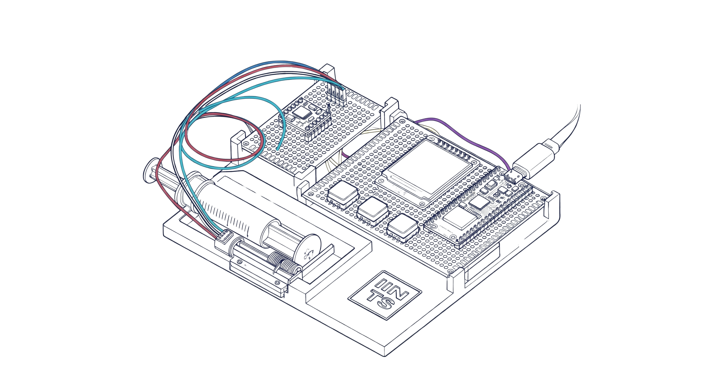

Patient-First Innovation
"With 13 years of personal experience living with Type 1 Diabetes, I understand that reliability is not a luxury it is a necessity. IINTS was founded to bridge the gap between patient needs and technological capability."
Read Our StoryA complete ecosystem for medical-tech research.
IINTS MK.2 (The Hardware)
Open-source hardware architecture featuring a custom PCB carrier, lead screw linear stepper drive, and neuro-accessible 240x240 TFT interface.
View MK.2 Specs →IINTS-AF (The Brain)
An open research SDK for simulating, stress-testing, and explaining automated insulin delivery logic before it is considered near real patients.
View Sandbox →Open Science
We don't hide our findings. All code, CAD files, and research papers are available to the community.
View Documentation →Frequently Asked Questions
Select a topic from the radial menu to inspect safety boundaries, open hardware specifications, and physiological simulation.
Select any topic from the circle menu to inspect research insights.